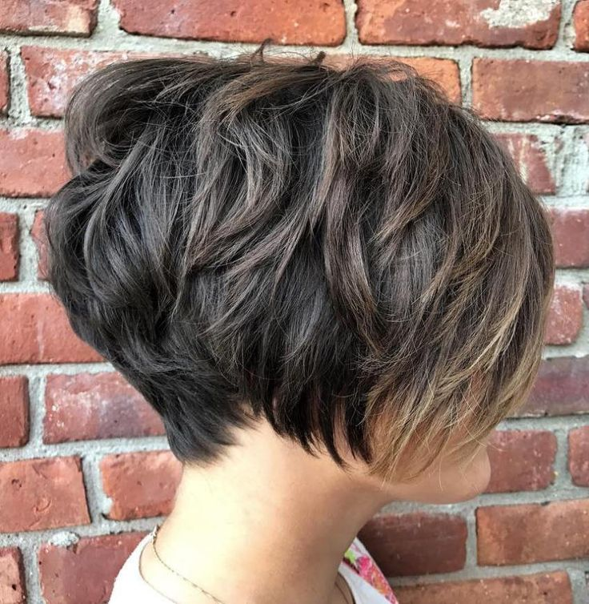
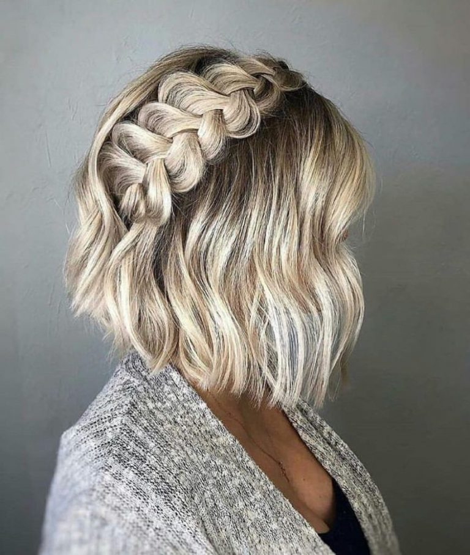
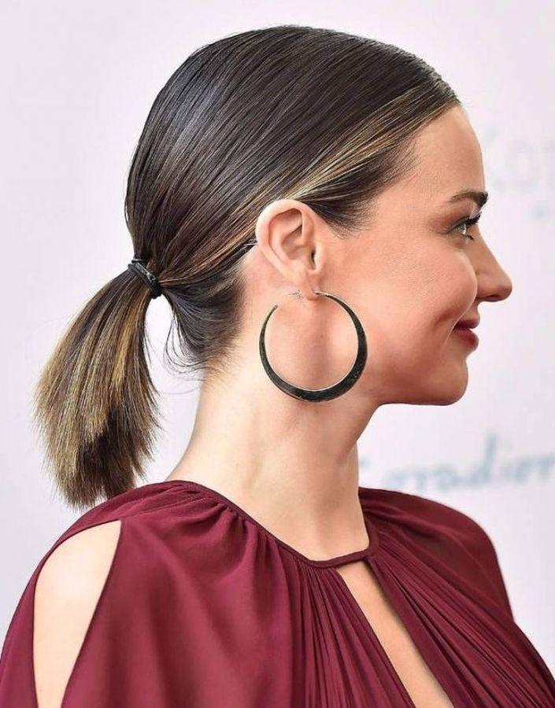

Стрижки на короткие волосы
Стрижка боб

Удивительно популярная во всем мире стрижка боб,
отлично подходит девушкам и женщинам любых возрастов.
Такую стрижку можно делать, как и школьницам, так и успешным,
деловым дамам в возрасте. Ведь стрижка боб всегда будет смотреться солидно и актуально,
а разные варианты выполнения данного вида стрижки, позволят любой девушке подобрать именно свой вариант.
Виды стрижки боб:
- Удлинённый боб (длинный);
- Боб с удлинением;
- Ассиметричный боб;
- Градуированный боб;
- Классический боб;
- Многослойный боб.
Если вы решили создать образ уверенной в себе женщины,
придать своему стилю динамичности и оригинальности,
без сомнения, выбирайте пикси.
Актуальными будут пикси для формы овал, некрупного лица с большими, выразительными чертами.
Также стрижка пикси пойдет представительницам прекрасного пола с вытянутым и худым лицом.
Пляжные волны

Укладка пляжные волны подходит девушкам с любым типом или формой лица.
Эти небрежные завитки красиво смотрятся на волосах любого цвета и длины.
Найдите свой способ, как сделать пляжные локоны, и эта прическа выручит вас во многих ситуациях.
- Угловое карe. Отличное решение для обладательниц овального лица.
Скошенные углом пряди скроют выступающие скулы и лицо приобретет правильные пропорции.
- Градуированное карe. Оптимальный вариант для круглой формы лица с крупными чертами.
Рваные кончики, косая челка и боковой пробор будут красиво обрамлять и идеально смягчать,
гармонизировать тяжеловатую внешность.
- Молоденьким девушкам с аккуратными, тонкими чертами отлично подойдет короткое каре.
В 2020 году остаются модными каре с прямыми срезами, без челки, а также удлиненное каре.
- короткое модное каре, уложенное на один бокстильная стрижка каре на ножке
с длинными прядями спередикрасивая стрижка каре бобмодное каре с облегченными прядями,
модная стрижка в этом сезонеКреативная стрижка – асимметричное карe.
Такой вариант подойдет практически ко всем типам лица.
Неотъемлемым элементом такой стрижки зачастую являются рваная челка, мелирование.
Дамам с круглым лицом в этом случае стоит выбирать прядки подлиннее, делая разницу более контрастной.
Прически
Французское плетение

Короткие волосы — не преграда для создания кос,
сделать изящное плетение вполне можно и на незначительной длины прядках. Несколько видов плетений рассмотрим далее
Хвост

Даже короткие волосы могут быть собраны в хвостик.
Для этого нужно просто расчесать шевелюру и стянуть ее у затылка в хвост резинкой.
К сожалению, высокого конского хвоста из короткой шевелюры не получится,
так как нижние прядки все время будут выбиваться. Также недоступен для короткой шевелюры и пучок.